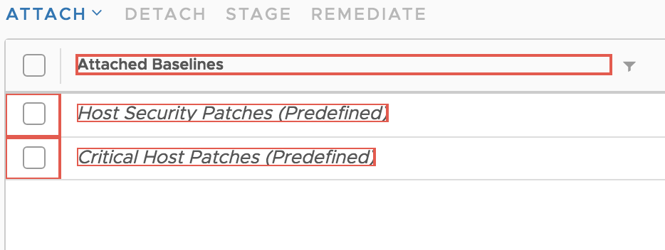
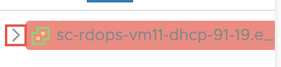
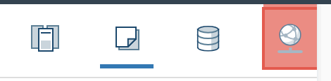
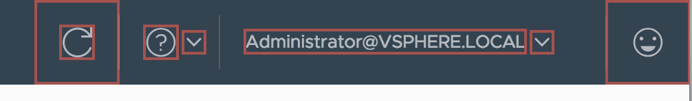

Table of contents
- What is it?
- What problems does the plugin solve?
- Custom settings and features for vSphere H5 client
- Fully configurable plugin controls
- Iframes and modals. How to deal with it?
What is it?
Plugin based solution that allows the user to conveniently and efficiently "navigate to" and "interact" with any element/item on the web page, using only the keyboard

What problems does the plugin solve?
Dexterity difficulties: 7% of working age adults have a severe dexterity difficulty (source: The Wide Range of Abilities and Its Impact on Computer Technology - Microsoft / Forrester). Severe dexterity difficulties mean users are unlikely to use a mouse, and rely on the keyboard instead.
Fully configurable plugin controls
Applied for all sites. For example navigation controls, search trigger keys, searchbox position, live-reloading, focus-remove keys and ex.
Local configurationsApplied per domain. Fox example turn-off and immediate search trigger options.
Custom features for vSphere H5 client
Plugin has a lot settings and features for vSphere H5 client. For example controls associacion which helps you to use near-by controls which are associaciated with some text match that you made.
Recognize checkboxes that is near to searched text...
 Find icons which contains search-term in some label...
 Modals
IFrames
What is special about Iframes?
Every iframe is threat like different document, so browser inject plugin in every document/iframe. So this means that every iframe has his own search...